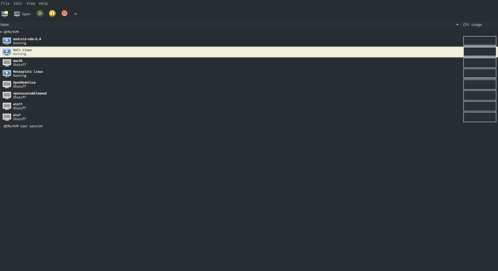
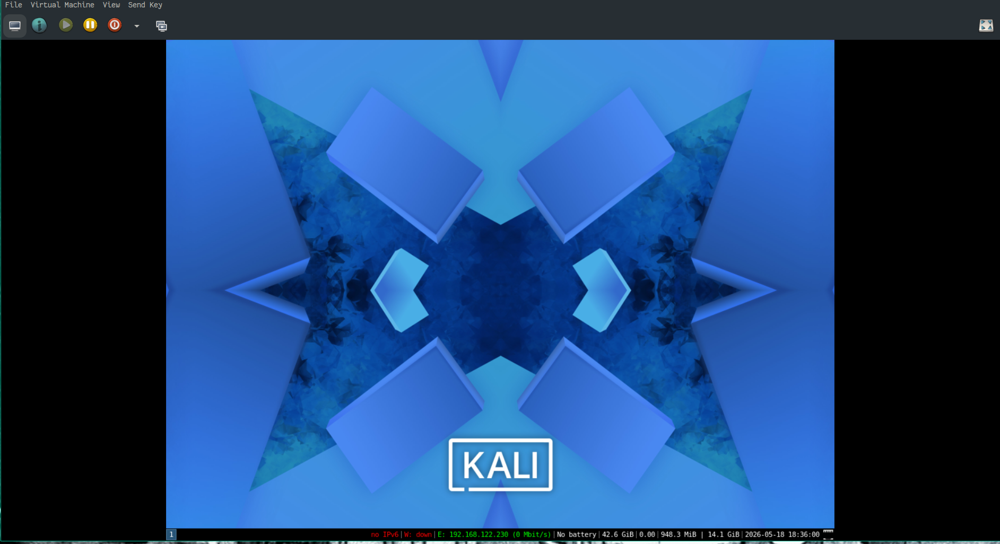
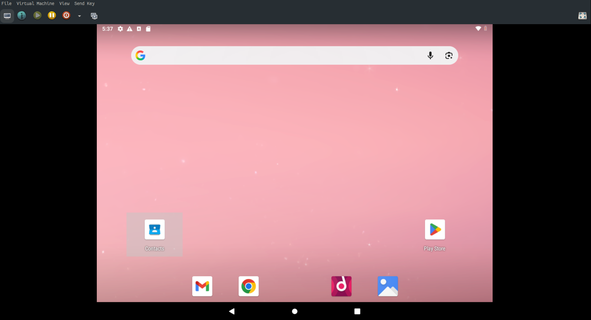
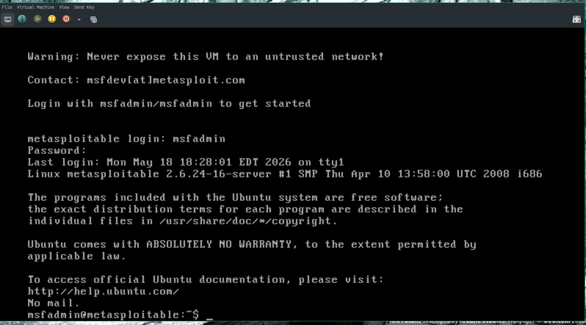
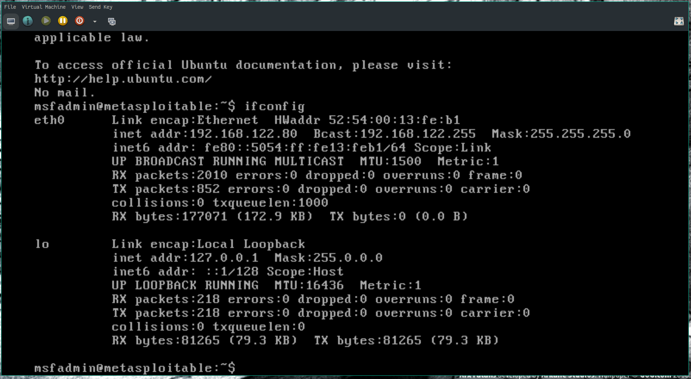
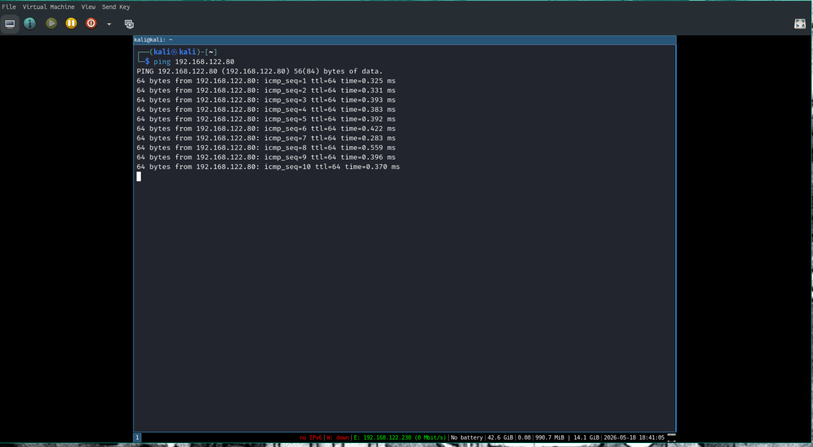

Host OS: Gentoo Linux Hypervisor: QEMU (using the virt-manager GUI, and some custom virsh commands)
Downloaded the qemu disk image, installed into qemu
Downloaded the Android installation disk image, installed into qemu using the Android installer.
Downloaded the zip file. Converted the Virtual-Box disk image into a qemu disk image, loaded into qemu.






Rapid 7 did not have a qemu image, so had to convert the virtual box image to qemu. Was no aware the operating system used was a 32 bit system, and had to adjust the settings on my virtual machine for this.
The Kali Linux image is very out of date. After setting up virsh to use the disk image, I had to update Kali:
sudo apt update
sudo apt upgradeThere were more than 200 packages out of date (including the Kernel
whick still had the recently found vulnerabilities
Copy Fail, Dirty Frag, and
Fragnesia)
Nessus would not install until Kali was updated.
I have been using this virtual machine manager for years now, so I already had networking, clipboard sharing etc setup for the system.
I had to make sure that Metasploitable2 is not accessable to the outside world.